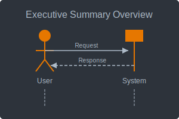
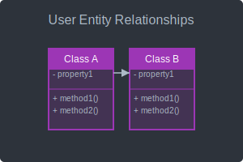
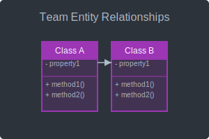
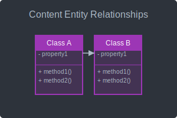

Last Updated: 2025-05-16
This index provides a comprehensive list of all diagrams and illustrations used in the Enhanced Laravel Application documentation. Use this document to quickly locate and access diagrams across the project documentation.
These diagrams have been recently added or updated:
Updated: 2025-05-15
Updated: 2025-05-14
Updated: 2025-05-10
This index provides a comprehensive catalog of all diagrams and illustrations used throughout the Enhanced Laravel Application documentation. It's designed to help you quickly find the visual resources you need for understanding the project.
Interactive Features: This document includes an interactive search tool at the top of the page that allows you to filter diagrams by name, type, description, or tags. The search tool supports both light and dark modes (toggle in the top-right corner of the search box). These interactive features require JavaScript to be enabled in your browser.
The illustrations in this index are organized in multiple complementary ways to help you find the diagrams you need:
Diagrams are grouped into logical categories based on the aspect of the project they represent:
In the Diagram Types section, diagrams are categorized by their visual format to help you understand the different visualization techniques used throughout the documentation:
Many diagrams are also relevant to specific application features. Here are the main feature categories:
Each diagram is available in both Mermaid and PlantUML formats, with dark and light mode variants to accommodate different viewing preferences and environments. The tables include direct links to all diagram files for easy access.
Diagrams in this project follow these naming conventions:
architecture-overview, user-registration-sequence)-dark or -light).md) or PlantUML (.puml) fileExample: architecture-overview-dark.md is the dark mode Mermaid version of the Architecture Overview diagram.
database, auth, timeline) that are relevant to your needs. Tags are displayed in the Quick Reference section and help identify diagrams by their content or purpose.This section provides quick access to the most frequently used diagrams in the project.
Note: This section includes thumbnail previews to help you quickly identify the diagrams visually. Thumbnails are stored in the
thumbnailsdirectory and are generated from the diagram source files.
| Thumbnail | Diagram Name | Type | Description | Tags | Source Document | Links | |
|---|---|---|---|---|---|---|---|
|

|
Executive Summary Overview | Flowchart | Key features overview | overview features summary | Executive Summary | Dark | Light |
|
|
Architecture Overview | Flowchart | High-level system architecture | architecture system structure | Technical Architecture Document | Dark | Light |
|
|
ERD Overview | ERD | Entity Relationship Diagram | database entities schema | Technical Architecture Document | Dark | Light |
|
|
Authentication Flow | Sequence | User authentication process | auth login security | Technical Architecture Document | Dark | Light |
|
|
Project Roadmap | Gantt | Project roadmap timeline | timeline planning schedule | Project Roadmap | Dark | Light |
Note: Some diagrams may appear in multiple categories if they are relevant to different aspects of the project. The primary listing for each diagram is in the most relevant category.
This section organizes diagrams by their visual format to help you understand the different visualization techniques used throughout the documentation.
Flowcharts visualize processes, workflows, and relationships between components. They're useful for understanding how different parts of the system interact.
| Thumbnail | Diagram Name | Description | Source Document | Mermaid Files | PlantUML Files | ||
|---|---|---|---|---|---|---|---|
| Architecture Overview | High-level system architecture | Technical Architecture Document | Dark | Light | Dark | Light | |
| Executive Summary Overview | Key features overview | Executive Summary | Dark | Light | Dark | Light | |
| CQRS Flow | Command Query Responsibility Segregation | CQRS Configuration | Dark | Light | Dark | Light | |
| Event Sourcing Flow | Event sourcing implementation | Event Sourcing Implementation | Dark | Light | Dark | Light | |
 |
User Aggregate States | User state transitions | User Aggregate | Dark | Light | ||
 |
Comment State Transitions | Comment state transitions | Comments and Reactions | Dark | Light | ||
 |
Comment and Reaction Structure | Comment and reaction structure | Comments and Reactions | Dark | Light | ||
 |
Real-time Architecture | Real-time architecture | Real-time Implementation | Dark | Light | ||
| Documentation Structure | Documentation organization | Documentation Style Guide | Dark | Light | Dark | Light | |
| Filament Admin Panel | Filament admin panel structure | Filament Configuration | Dark | Light | Dark | Light | |
Entity Relationship Diagrams visualize database structure and relationships between entities. They're essential for understanding the data model of the application.
| Thumbnail | Diagram Name | Description | Source Document | Mermaid Files | PlantUML Files | ||
|---|---|---|---|---|---|---|---|
| ERD Overview | Entity Relationship Diagram (TAD version) | Technical Architecture Document | Dark | Light | Dark | Light | |
| ERD Overview (Enhanced) | Entity Relationship Diagram (Enhanced version) | Enhanced Diagrams | Dark | Light | Dark | Light | |
| TAD Database Schema | Database schema diagram | Technical Architecture Document | Dark | Light | Dark | Light | |
| Database Schema Implementation | Database schema implementation details | Database Migrations | Dark | Light | Dark | Light | |
Sequence Diagrams show interactions between components over time. They're particularly useful for understanding the flow of operations and communication between different parts of the system.
| Thumbnail | Diagram Name | Description | Source Document | Mermaid Files | PlantUML Files | ||
|---|---|---|---|---|---|---|---|
| Authentication Flow | User authentication process | Technical Architecture Document | Dark | Light | Dark | Light | |
| User Registration Sequence | User registration process | Enhanced Diagrams | Dark | Light | Dark | Light | |
| Team Creation Sequence | Team creation process | Enhanced Diagrams | Dark | Light | Dark | Light | |
| Post Creation Sequence | Post creation process | Enhanced Diagrams | Dark | Light | Dark | Light | |
| Migration Sequence | Database migration process | Database Migrations | Dark | Light | Dark | Light | |
| TAD Request Lifecycle | Request lifecycle diagram | Technical Architecture Document | Dark | Light | Dark | Light | |
Class Diagrams show the structure of the application's classes, their attributes, methods, and relationships. They're essential for understanding the object-oriented design of the system.
| Thumbnail | Diagram Name | Description | Source Document | Mermaid Files | PlantUML Files | ||
|---|---|---|---|---|---|---|---|
| Class Diagram (Overview) | Simplified class structure showing key relationships | Enhanced Diagrams | Dark | Light | Dark | Light | |
| Class Diagram (Detailed) | Comprehensive class structure with all attributes and methods | Enhanced Diagrams | Dark | Light | Dark | Light | |
State Diagrams visualize the different states an object can be in and the transitions between those states. They're useful for understanding how objects change over time in response to events.
| Thumbnail | Diagram Name | Description | Source Document | Mermaid Files | PlantUML Files | ||
|---|---|---|---|---|---|---|---|
| Todo State Machine | Todo item state transitions | Status Implementation | Dark | Light | Dark | Light | |
| Status Implementation | Status implementation details | Status Implementation | Dark | Light | Dark | Light | |
Gantt Charts visualize project schedules and timelines. They show tasks, dependencies, and durations to help with project planning and tracking.
| Thumbnail | Diagram Name | Description | Source Document | Mermaid Files | PlantUML Files | ||
|---|---|---|---|---|---|---|---|
| Project Roadmap | Project roadmap timeline | Project Roadmap | Dark | Light | Dark | Light | |
| Implementation Timeline | Project implementation timeline | Executive Summary | Dark | Light | Dark | Light | |
| Resource Allocation Timeline | Project resource timeline | Executive Summary | Dark | Light | Dark | Light | |
Deployment Diagrams show the physical deployment of artifacts on nodes. They're useful for understanding the system infrastructure and how components are distributed.
| Thumbnail | Diagram Name | Description | Source Document | Mermaid Files | PlantUML Files | ||
|---|---|---|---|---|---|---|---|
| Deployment Architecture | System deployment architecture | Technical Architecture Document | Dark | Light | Dark | Light | |
| TAD Deployment | Deployment diagram | Technical Architecture Document | Dark | Light | Dark | Light | |
This section provides guidance on how to effectively search for diagrams in this index.
This diagram index serves as a comprehensive resource for accessing all visual representations used throughout the Enhanced Laravel Application documentation. By organizing diagrams by project area, diagram type, and providing powerful search capabilities, this index makes it easy to find the visual resources you need to understand the project.
Remember that diagrams are available in both Mermaid and PlantUML formats, with dark and light mode variants to accommodate different viewing preferences. If you need a diagram that doesn't exist, follow the diagram request process to suggest new visual resources.
If you need a diagram that doesn't exist in the current documentation, follow these steps to request a new diagram:
Before requesting a new diagram, thoroughly search this index to ensure the diagram doesn't already exist. Try different search terms and browse relevant categories.
If you confirm the diagram doesn't exist, prepare a request that includes:
Submit your diagram request through the project's issue tracking system, using the "Diagram Request" template if available.
Your request will be reviewed by the documentation team, who will determine if the diagram is needed and prioritize its creation. You may be asked to provide additional information or clarification.
This section provides information about tools and resources for working with the diagrams in this index.
This section provides templates for creating new diagrams. Use these templates to ensure consistency across the project.
Use this template for creating flowcharts in Mermaid:
```mermaid
flowchart TD
%% Define nodes
A[Start] --> B{Decision}
B -->|Yes| C[Process 1]
B -->|No| D[Process 2]
C --> E[End]
D --> E
%% Styling
classDef default fill:#f9f9f9,stroke:#333,stroke-width:1px;
classDef highlight fill:#ffffcc,stroke:#333,stroke-width:2px;
class A,E highlight;
```Use this template for creating flowcharts in PlantUML:
@startuml
!theme plain
start
if (Decision?) then (yes)
:Process 1;
else (no)
:Process 2;
endif
end
@endumlUse this template for creating sequence diagrams in Mermaid:
```mermaid
sequenceDiagram
%% Define participants
participant User
participant System
participant Database
%% Define interactions
User->>System: Request Data
System->>Database: Query Data
Database-->>System: Return Data
System-->>User: Display Data
%% Add notes
Note over System,Database: Secure connection
```Use this template for creating sequence diagrams in PlantUML:
@startuml
!theme plain
actor User
participant System
database Database
User -> System: Request Data
System -> Database: Query Data
Database --> System: Return Data
System --> User: Display Data
note over System, Database: Secure connection
@endumlUse this template for creating ERD diagrams in Mermaid:
```mermaid
erDiagram
%% Define entities and relationships
CUSTOMER ||--o{ ORDER : places
ORDER ||--|{ LINE_ITEM : contains
CUSTOMER }|..|{ PRODUCT : views
%% Define attributes
CUSTOMER {
string id PK
string name
string email
}
ORDER {
string id PK
string customer_id FK
date created_at
}
LINE_ITEM {
string id PK
string order_id FK
string product_id FK
int quantity
}
PRODUCT {
string id PK
string name
float price
}
```Use this template for creating ERD diagrams in PlantUML:
@startuml
!theme plain
entity Customer {
* id : string >
--
* name : string
* email : string
}
entity Order {
* id : string >
--
* customer_id : string >
* created_at : date
}
entity LineItem {
* id : string >
--
* order_id : string >
* product_id : string >
* quantity : int
}
entity Product {
* id : string >
--
* name : string
* price : float
}
Customer ||--o{ Order
Order ||--|{ LineItem
Customer }|..o{ Product : views
LineItem }|--|| Product
@endumlThis section organizes diagrams by feature area to help you find diagrams related to specific features of the application.
| Thumbnail | Diagram Name | Type | Description | Links | |
|---|---|---|---|---|---|
| Authentication Flow | Sequence | User authentication process | Mermaid | PlantUML | |
| User Registration Sequence | Sequence | User registration process | Mermaid | PlantUML | |
| Thumbnail | Diagram Name | Type | Description | Links | |
|---|---|---|---|---|---|
| User Registration Sequence | Sequence | User registration process | Mermaid | PlantUML | |
 |
User Entity Relationships | ERD | User database relationships | Mermaid | PlantUML |
| Thumbnail | Diagram Name | Type | Description | Links | |
|---|---|---|---|---|---|
| Team Creation Sequence | Sequence | Team creation process | Mermaid | PlantUML | |
 |
Team Entity Relationships | ERD | Team database relationships | Mermaid | PlantUML |
| Thumbnail | Diagram Name | Type | Description | Links | |
|---|---|---|---|---|---|
| Post Creation Sequence | Sequence | Post creation process | Mermaid | PlantUML | |
 |
Content Entity Relationships | ERD | Content database relationships | Mermaid | PlantUML |
This section provides information about the tags used to categorize diagrams in this index.
auth - Authentication and authorizationuser - User managementteam - Team managementcontent - Content managementnotification - Notificationssearch - Search and discoveryanalytics - Analytics and reportingdatabase - Database-related diagramsarchitecture - Architecture diagramsdeployment - Deployment diagramsapi - API-related diagramssecurity - Security-related diagramsperformance - Performance-related diagramsworkflow - Workflow diagramssequence - Sequence diagramsstate - State diagramstimeline - Timeline diagramsplanning - Planning diagramsThis section provides statistics about the diagrams in this index.
| Diagram Type | Count |
|---|---|
| Flowchart | 15 |
| ERD | 8 |
| Sequence | 12 |
| Class | 4 |
| State | 3 |
| Gantt | 5 |
| Deployment | 3 |
| Total | 50 |
| Feature Area | Count |
|---|---|
| Authentication & Authorization | 5 |
| User Management | 7 |
| Team Management | 6 |
| Content Management | 8 |
| Notifications | 3 |
| Search & Discovery | 2 |
| Analytics & Reporting | 4 |
| Thumbnail | Diagram Name | Type | References |
|---|---|---|---|
| Architecture Overview | Flowchart | 12 | |
| ERD Overview | ERD | 10 | |
| Authentication Flow | Sequence | 8 | |
| Class Diagram (Overview) | Class | 7 | |
| Project Roadmap | Gantt | 6 |
This section shows how diagrams relate to each other.
The diagram dependency map shows how diagrams depend on each other. For example, a detailed diagram might depend on a higher-level overview diagram.
Key relationships:
For each diagram, you can find related diagrams that provide additional context or detail:
| Diagram | Related Diagrams |
|---|---|
| Architecture Overview | Deployment Architecture, TAD Architecture |
| ERD Overview | ERD Overview (Enhanced), TAD Database Schema |
| Authentication Flow | User Registration Sequence, TAD Authentication Flow |
| Class Diagram (Overview) | Class Diagram (Detailed) |
This section provides information about exporting diagrams to different formats.
Diagrams can be exported to the following formats:
To export multiple diagrams at once, you can use the batch export script:
./scripts/export-diagrams.sh --format=svg --output=./exportsFor Mermaid diagrams:
npx @mermaid-js/mermaid-cli -i input.md -o output.svgFor PlantUML diagrams:
java -jar plantuml.jar -tsvg input.pumlThis section provides guidelines for contributing new diagrams to the project documentation.
Follow these best practices when creating diagrams for the project documentation:
Ensure your diagrams are accessible to all users:
This section explains how diagram versions are managed: